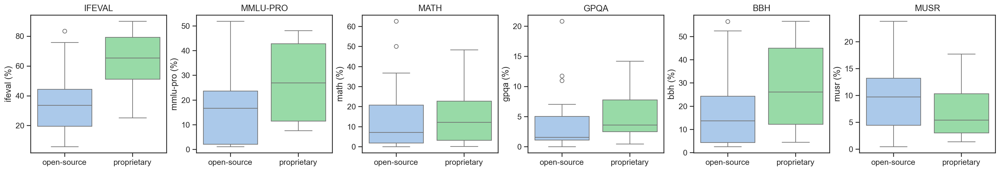

Q 2 – How do open-source models differ from proprietary ones in terms of performance?
Average benchmark score by access type comparison
To examine whether model accessibility influences performance, we compared the average benchmark scores of open-source and proprietary large language models (LLMs).
Because absolute accuracy values can be hard to interpret in isolation, a practical performance threshold was introduced as a visual reference.
NoteCommunity Convention
Following the community convention used on the Hugging Face Open LLM Leaderboard (Hugging Face, 2024), we define practical accuracy as achieving an average benchmark score above 25%
The approximate level at which models begin to demonstrate consistent reasoning and instruction-following capabilities across diverse evaluation tasks.
This threshold does not represent a strict pass/fail cutoff but serves as an informative benchmark.
Each dot represents a model, color-coded by access type, with hover information displaying the model’s name and size.
The dashed gray line marks the 25% threshold, indicating the onset of consistent reasoning ability observed in community benchmarks.
While proprietary models more frequently exceed this level, several open-source models approach or surpass it—suggesting that performance parity between open and proprietary ecosystems is increasingly attainable.
Task-Level Benchmark Comparison
To compare the permoance between open-source and proprietary models across the evaluation tasks, we analized the six benchmark metrics. In figure 3 we vizualize the distribution of score for each benchmark using boxplots and grouping the model by access type

Except MUSR proprietary models show higher medians particualry for IFEVAL and MMLU-PRO, though overlapping interquartile ranges for the other metrics indicatethat some of the open-surce models would perform similary as the proprietary models.
Statistical test
To assess whether there is a statistically significant difference in performance between open-source and proprietary models, we conducted a Welch’s t-test on the average benchmark scores.
This test was chosen because it does not assume equal variances or sample sizes between groups, as it is reflected in this dataset. Proprietary models are fewer but sometimes larger.
The Welch’s t-test compares mean benchmark scores between open-source and proprietary models without assuming equal variance. The result (t = -1.76, p = 0.09) indicates no statistically significant difference between the two groups.
NoteWelch t-test summary
Code
d = df_joined.dropna(subset=["average","access type"]).copy()
open_avg = d.loc[d["access type"]=="open-source","average"].astype(float)
prop_avg = d.loc[d["access type"]=="proprietary","average"].astype(float)
t, p = ttest_ind(open_avg, prop_avg, equal_var=False)
print(f"Welch’s t-test result: t = {t:.2f}, p = {p:.2f}")Welch’s t-test result: t = -1.76, p = 0.10To control for differences in model size, we performed an Analysis of Covariance (ANCOVA) with average benchmark score as the dependent variable, log10(model_size) as a covariate, and access type as a categorical predictor.
======================================================================================================
coef std err t P>|t| [0.025 0.975]
------------------------------------------------------------------------------------------------------
Intercept 11.4453 1.874 6.108 0.000 7.613 15.278
C(Q('access type'))[T.proprietary] 0.3196 3.215 0.099 0.921 -6.256 6.895
log_size 13.1257 2.115 6.205 0.000 8.799 17.452
======================================================================================================The ANCOVA results show that larger models consistently achieve higher benchmark scores, while whether a model is open-source or proprietary makes no measurable difference.
When model size is expressed on a log scale, every ten-fold increase in parameters is linked to about a 13-point rise in average benchmark performance.
In other words, model scale rather than licensing status is the main factor driving performance differences across the models analyzed.